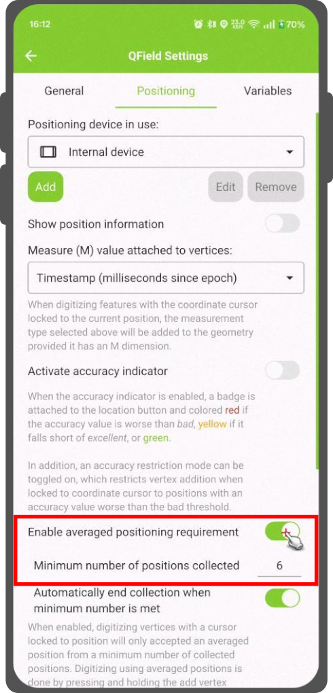

QField puede hacer uso del GNSS interno (Global Navigation Satellite
System, como GPS, GLONASS, Galileo o Beidou). QField también puede conectarse
a antenas externas mediante flujos NMEA por Bluetooth, TCP o conexión
UDP.
Los dispositivos GNSS también son capaces de medir la altitud junto a la posición actual en 2D
sobre la superficie terrestre.
Cuando el posicionamiento está activado, su posición se mostrará en azul en el mapa.
Su ubicación es visible como un punto azul si está quieto o como una flecha que indica su dirección
si está en movimiento.
El rayo azul indica la orientación actual de su dispositivo si éste tiene
una brújula magnética incorporada.
Un círculo alrededor de su posición actual indica la precisión reportada por el
dispositivo de posicionamiento.
Al digitalizar una geometría en una capa vectorial que contiene una dimensión M,
QField añadirá un valor de medición a los vértices individuales siempre que el
el cursor de coordenadas se bloquea en la posición actual.
De forma predeterminada, el valor representará la marca de tiempo de la posición capturada (milisegundos
desde epoch). Puede cambiar este valor utilizando el cuadro combinado en la configuración de
la pestaña de posicionamiento.
Los valores disponibles para elegir son la marca de tiempo, la velocidad de avance, el rumbo, la exactitud
horizontal y precisión vertical, así como PDOP, HDOP y VDOP.
Se puede definir una exactitud mínima deseada para las mediciones. La calidad
será informada en tres clases, mala (roja), aceptable (amarillo) y excelente
(verde). Estos colores se mostrarán como un punto en la parte superior del botón GNSS.
Los umbrales pueden definirse en la pestaña de posicionamiento de los ajustes.
Si el ajuste Habilitar requisito de precisión está activado, no se
puede recoger nuevas mediciones con el cursor de coordenadas bloqueado en
la posición actual con un valor de precisión que es malo (rojo).
Los valores de altitud pueden corregirse con archivos de desplazamiento de cuadrícula vertical para
calcular la altura ortométrica.
Vertical grid shift files have to be made available to QField by putting
them into the QField app folder [App Directory]/QField/proj.
Una vez que el archivo de desplazamiento de cuadrícula se coloca allí, está disponible en QField en
los Ajustes de posicionamiento en Desplazamiento vertical de la cuadrícula en uso.
Si utiliza la corrección de altitud y un dispositivo de posicionamiento externo
es usado, considere desactivar Usar altitud ortométrica del dispositivo.
Los formatos admitidos actualmente son:
GeoTIFF (.tif, .tiff)
NOAA Vertical Datum (.gtx)
NTv2 Datum Grid Shift (.gsb)
Natural Resources Canada's Geoid (.byn)
Flujo
Example: Netherlands - ETRS89 to NAP
For transformations involving the Dutch NAP (Normaal Amsterdams Peil) vertical datum, you'll need the official grid file from NSGI.
Download the file: Get nlgeo2018.gtx directly from the NSGI website.
Place the downloaded .gtx file into the directory [App Directory]/QField/proj.
This is independent of whether you are using QFieldCloud or not.
Example: Switzerland - CH1903+/LV95
To get precise altitude data for Cadastral Surveying in Switzerland (LV95), you must use the geoid correction grid from Swisstopo.
The official file comes in an .agr format and must be converted to .gtx (NTv2 Grid Shift File) before it can be used.
Other raster formats like (.tiff) can also be used.
Download the "Geoid OGD" dataset from Swisstopo under the following link Download Link: Geoid OGD from Swisstopo.
Unzip the archive to retrieve the file: chgeo2004_htrans_LV95.agr.
Convert the file using the using the gdal_translate algorithm with one of the following options:
You can also perform the conversion programmatically within the QGIS Python Console or a standalone script.
importprocessinginput_grid='/path/to/your/chgeo2004_htrans_LV95.agr'output_grid='/path/to/your/chgeo2004_htrans_LV95.gtx'processing.run("gdal:translate",{'INPUT':input_grid,'OUTPUT':output_grid})print(f"Successfully converted grid to: {output_grid}")
Fieldwork
Copy the chgeo2004_htrans_LV95.gtx file to the directory [App Directory]/QField/proj on your mobile device.
Open the Site Dashboard
Tap on the 3-dotted menu (⋮) and direct to Settings > Positioning
Enable your GNSS device.
It will directly center to your current location once the positioning information is available.
Change to edit mode and press on the target button - the cross in the center means it is using GNSS positioning.
A long press on the GNSS button will show the positioning menu.
Inside the menu you can turn on the Show position information which will show the current coordinates that are reprojected into the CRS of your project along with the precision information.
Note
If you see WGS 84 lat/lon information instead of information in your project CRS, you probably have no signal yet.
Puede obtener la información de posicionamiento de su dispositivo interno y externo configurando específicamente su formulario de atributos.
Estas variables se utilizan habitualmente como parte de expresiones de valores predeterminados
para que los campos lleven la cuenta de la calidad de los puntos medidos individualmente.
Un caso de uso común es registrar la precisión horizontal, lo cual se puede realizar mediante la variable @position_horizontal_accuracy.
Para obtener una lista completa de todas las variables disponibles, consulte la documentación de referencia de variables de expresión.
Información para el valor Z del GNSS con desplazamiento vertical de cuadrícula en uso:
- Compensación de la altura de la antena=falso
Captura de longitud, latitud y altitud en forma de atributos¶
It is useful and not uncommon that the actual positioning values should be automatically stored inside the attribute form.
This applies for longitude, latitude and altitude.
Flujo
Configuración del formulario de atributos
En QGIS, vaya directamente a Propiedades de capa > Formulario de atributos
(Opcional): Debe agregar un campo de tipo decimal al formulario que pueda capturar los datos. Asígnele un nombre adecuado (p. ej., "longitud").
En la configuración de la visualización del widget del campo correspondiente, agregue el siguiente valor predeterminado:
Longitud:x(@position_coordinate)
Latitud:y(@position_coordinate)
Altitud:z(@position_coordinate)
Esto guardará la coordenada directamente en el campo al agregar una nueva entidad.
Nota
Esto solo funciona si el posicionamiento está activado.
Se recomienda crear una capa de registro de los vértices recopilados. Esto permite realizar un seguimiento de los metadatos de cada vértice, como los atributos de calidad GNSS y más.
Flujo
Agregue una capa de puntos al proyecto y configure los atributos para almacenar esta información.
Asigne el rol registrador digitalizador a la capa de puntos.
Vaya a > Proyecto > Propiedades... > QField.
Establezca los valores predeterminados para los atributos utilizando las variables de posicionamiento mencionadas anteriormente.
QField admite la conexión a dispositivos de posicionamiento GNSS externos mediante flujos NMEA a través de Bluetooth, TCP,
o conexiones UDP.
En la sección Posicionamiento, puede administrar y cambiar entre sus dispositivos GNSS internos y externos guardados.
El desglose del soporte de conexiones por plataforma es el siguiente:
Android
iOS
Windows
Linux
MacOS
Bluetooth
*
TCP
UDP
Puerto serie
(*) La compatibilidad con Bluetooth en Windows se produce a través del puerto serie virtual de forma automática
creado por el sistema operativo cuando se conecta al dispositivo GNSS.
Las sentencias NMEA actualmente admitidas son GGA, RMC, GSA, GSV, GST, VTG, HDG y HDT.
Nota
Asegúrese de que ninguna otra aplicación, como los proveedores de localización simulada, utiliza la misma conexión.
Si ha seleccionado un receptor externo como dispositivo de posicionamiento, encontrará la opción Registrar sentencias NMEA del dispositivo a archivo. Si está activada, todas las sentencias NMEA procedentes de dispositivos de posicionamiento externos se registrarán en un archivo.
Es posible proporcionar una ubicación simulada a través de una aplicación android independiente a
QField. Hay varias opciones para ello, una de ellas es Android NTRIP Client.
El cursor de coordenadas debe estar bloqueado en la ubicación actual mediante el botón Bloquear en posición
Hay una función que permite digitalizar utilizando posiciones promediadas.
El estudio se iniciará manteniendo pulsado el botón de añadir vértices, que comenzará a recoger posiciones.
Durante la recopilación, aparecerá un indicador sobre el cursor de coordenadas que muestra el número de posiciones recopiladas.
Si se activa un requisito de recuento mínimo de posiciones promediadas, también aparecerá una barra de progreso que indica el progreso hacia el cumplimiento de dicho requisito.
Para activar la navegación directa lateral "Panel de Control" > Configuración > Posicionamiento
Toque brevemente el lugar donde desea acumular puntos y QField agregará automáticamente la posición promedio una vez que se alcance el recuento mínimo.

Nota
Al utilizar las variables @gnss_* o @position_ en posiciones promediadas, la variable también representará el promedio de todas las muestras recopiladas.


{kind=link}


{kind=link}
{kind=link}